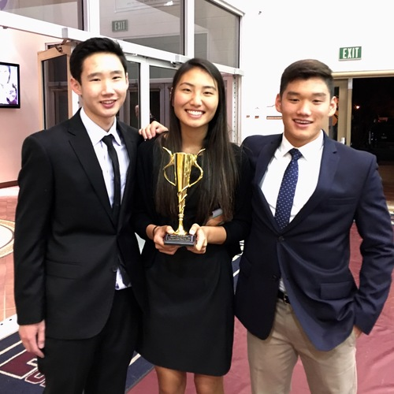
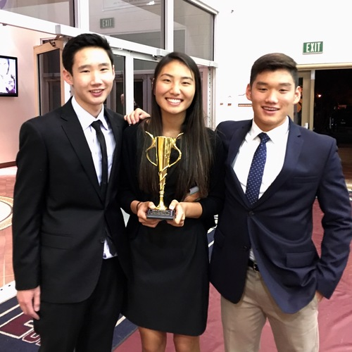

Maximilian Tsang
I am an 18 year old student at the University of
California Riverside majoring in Economics/Administrative Studies.It is my 1st year
so I am excited to see what the future awaits for me in my college career as well as my future careers.
I was born in Whittier, California and lived in Chino Hills all my life. I attended Hidden Trails Elementary School, Canyon Hills Junior High,
Ruben S. Ayala High School, and now University of California Riverside. I have been involved in debate club from 7th grade to my senior year in
high school and have been an active participant in different volunteer organizations in high school such as LEO club, Key Club, as well as an assistant
basketball coach for the National Junior Basketball association. I learned that helping people is one of the greatest activities that I can use with my time
because the small gestures that I am able to do can leave a huge impact on other people’s lives. I have participated in multiple charity events giving food to
those in need during Thanksgiving, as well as packing toys for families who can not afford them that year. I am very grateful for my time coaching 5th and 6th
graders because I myself love to play basketball and helping the next generation of basketball players proves to me that sports in general is not always about
winning, but how the sport builds one’s character. I have been lucky to be part of numerous volunteer events, shaping my community into one that I am proud of. I
have been a leader within my community through multiple examples and I plan to lead more people to a brighter future.
I also traveled abroad for a Taiwanese volunteer program, where I taught English to 3rd grade Taiwanese students. Through my time in Taiwan I gained many teamwork skills, and practice in teaching others that are not from the same backgrounds as I am, opening my eyes to the various aspects of work in foreign countries. I possess a broadened scope of work relations, not just in the United States, but also in Asian countries, making me a better overall leader.
I have worked as a waiter and a cashier in two restaurants, developing my social skills and work skills. Through restaurant work I am familiar with working late nights both physically and mentally with a hasty pace. I have coached the art of debating and refutations to elementary school students, making me a comfortable public speaker, as well as a quick on the spot thinker. I am able to present myself in a way that persuades people to follow me, making me a valuable leader and team member. Through my years of debating I am well informed about the current political issues around the world, as well as the ability to spread my knowledge and opinions to others in a clear way.
I am a very qualified candidate for any leadership position through my experience in a vast variety of fields. I am prepared to solve any problems that may occur and will be able to lead a team of workers to a successful goal.
My current Economic Consultant job allows me to aid businesses into making the best economic decision in order to maximize profits for their firm.
Experience
Waiter
• Responsible for checking out customers
• Clean up tables
• Take orders
• Satisfy Customers
• Serve food
• Refill drinks
Debate Coach
• Ran sessions to help students learn how to debate and improve public speaking skills
• Refined 5th and 6th graders argumentation skills
• Created educational content to help young students learn more about current events
• Helped students become comfortable and thinking on the spot
• Started coaching in 8th grade
Education
UC Riverside
Portfolio
.jpg)
.jpg)

.jpg)
